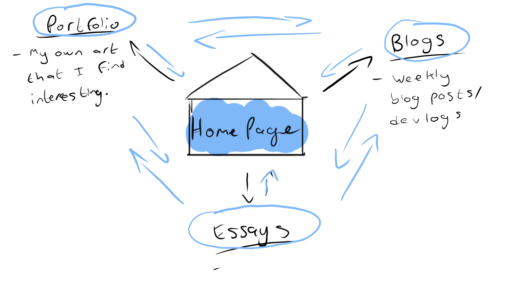
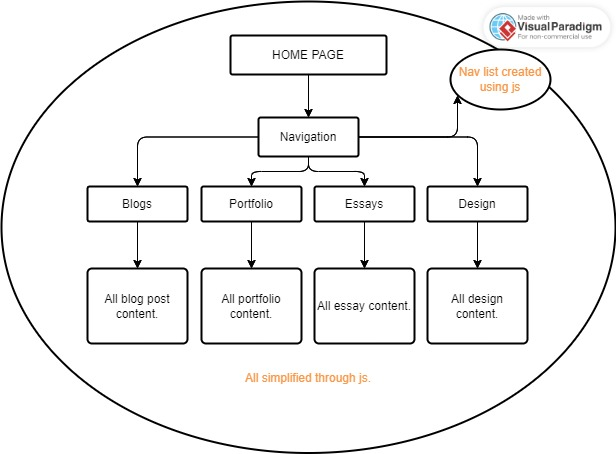

Blog Post 4 - Week 4
Well, I have just realised that I should have been posting these blog posts in the discussion tab as well…oops ☹.
With regards to my work for website 1… I’m glad that I learned the basics of making a website. I now have a new skill to develop, which is learning HTML or rather expanding my understanding of it. I could have done much more though. I feel as though a lot of my website work is just basic. When it comes to putting my website ideas on paper (or whatever the digital equivalent of that is), I find that it has been somewhat difficult. I’m not quite where I would like to be in HTML, but I hope to learn more!
Here is a visual representation of what the user flow of my website should be like:
And here is a visual representation of what the information structure of my website should be like:
An article by Jenn Marie of SlickPlan breaks down good user flow into the following criteria:
- The goals of the user
- The values of the user
- Information needed by the user to complete the identified task
- Potential hesitations or barriers for the user.
It is important to put the user's needs first, as they are who the website is being made for, so their experience needs to be simple and enjoyable.
References
Marie, J. (2017). 10 Techniques for Optimizing User Flow on a Website. SlickPlan. 2017.